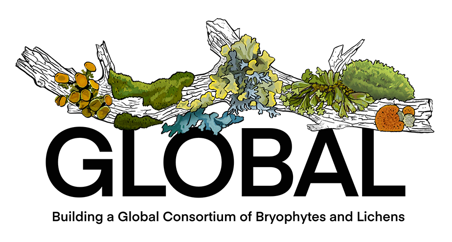

Research
University of Tennessee, Knoxville - Ecology & Evolutionary Biology
Maternal Effects, Parent-Offspring Conflict, & Structure-Function Relationships
Our research studies the structural abilities of maternal plants to protect their offspring. In mosses, this protection from dehydration stress is provided by a thick waxy cuticle. The maternal cuticle forms on the moss gametophyte calyptra early during development when the offspring sporophyte is unable to protect itself. Functional tests have revealed that the maternal cuticle is critical for offspring survival, development, and fitness.
Our research studies the structural abilities of maternal plants to protect their offspring. In mosses, this protection from dehydration stress is provided by a thick waxy cuticle. The maternal cuticle forms on the moss gametophyte calyptra early during development when the offspring sporophyte is unable to protect itself. Functional tests have revealed that the maternal cuticle is critical for offspring survival, development, and fitness.
In collaboration with chemistry researchers in the Jetter Lab at the University of British Columbia and in the Busta Lab at the University of Minnesota - Duluth, we analyzed cuticle chemistry to determine whether maternal cuticles are unique and potentially chemically specialized for protection.
Funding:
| 2021 to Present | National Science Foundation, CAREER DEB-2046467 - Integrating natural history collections to explore the functional morphology and evolution of the parent-offspring conflict in mosses. Principal Investigator: Budke JM. Online Abstract |
Relevant publications:
| 2024 | Budke JM. Illuminating the role of the calyptra in sporophyte development. Current Opinion in Plant Biology 81:102565. doi.org/10.1016/j.pbi.2024.102565 - PDF | 2021 | Whitaker KR*, Budke JM. Moss sporophyte transpiration rates are higher when calyptrae are removed. Evansia 38: 100-108. (*undergraduate student collaborator) doi.org/10.1639/0747-9859-38.3.100 - PDF |
| 2019 | Budke JM. The moss calyptra: A maternal structure influencing offspring development. The Bryologist 122: 471-491. (Featured on the cover: Volume 122, Issue 3) doi.org/10.1639/0007-2745-122.3.471 - PDF |
| 2016 | Budke JM, Goffinet B. Comparative cuticle development reveals taller sporophytes are covered by thicker calyptra cuticles in mosses. Frontiers in Plant Science 7: 832. doi.org/10.3389/fpls.2016.00832 - PDF |
| 2016 | Busta L, Budke JM, Jetter R. Cuticular waxes from the gametophyte, sporophyte, and calyptra of the moss Funaria hygrometrica. Annals of Botany 118: 511-522. doi.org/10.1093/aob/mcw131 - PDF - Supplemental Data |
| 2016 | Busta L, Budke JM, Jetter R. Identification of β-hydroxy fatty acid esters and primary, secondary-alkanediol esters in cuticular waxes of the moss Funaria hygrometrica. Phytochemistry 121:38-49. doi.org/10.1016/j.phytochem.2015.10.007 - PDF |
| 2013 | Budke JM, Goffinet B, Jones CS. Dehydration protection provided by a maternal cuticle improves offspring fitness in the moss Funaria hygrometrica. Annals of Botany 111: 781-789. doi.org/10.1093/aob/mct033 - PDF |
| 2012 | Budke JM, Goffinet B, Jones CS. The cuticle on the gametophyte calyptra matures before the sporophyte cuticle in the moss Funaria hygrometrica (Funariaceae). American Journal of Botany 99: 14-22. - Winner of the Grady Webster Publication Award - doi.org/10.3732/ajb.1100311 - PDF |
| 2012 | Wynne MA*, Budke JM. Examining the ability of calyptrae to produce protonema in Funaria hygrometrica. Evansia 29: 61-64. (*undergraduate student collaborator) doi.org/10.1639/079.029.0205 - PDF |
| 2011 | Budke JM, Goffinet B, Jones CS. A hundred-year-old question: is the moss calyptra covered by a cuticle? A case study of Funaria hygrometrica. Annals of Botany 107: 1259-1277. doi.org/10.1093/aob/mcr079 - PDF |
Systematics, Taxonomy, & Morphological Evolution
Refining our systematic and taxonomic concepts is key to cataloging the planet’s biodiversity and broadening our understanding of plant evolution. Our concepts of species and the relationships between them are often initially based on morphology. Analyses using molecular phylogenetics and cytological studies can reveal novel relationships and uncover hidden diversity. In organisms thought to have few morphological features, such as mosses, homoplasy is regularly uncovered due to morphological reduction. Using the process of reciprocal illumination species can be further explored to determine whether our systematic and taxonomic concepts need to be revised. This may result in the description of new species (Isoëtes tennesseensis Luebke & Budke) or families (Micromitriaceae Smyth ex Goffinet & Budke).
Relevant publications:
| 2022 | Budke JM1, Patel NR1, GoFlag Consortium, Wienhold MD, Bruggeman-Nannenga MA. Exploring systematic relationships and morphological evolution in the moss genus Fissidens using molecular data generated from herbarium specimens. Journal of Systematics and Evolution 61: 868-889. (1co-first authors) doi.org/10.1111/jse.12926 - PDF - Supplemental Info |
| 2019 | Patel N, Fawcett S, Sundue M, Budke JM. Evolution of perine morphology in the Thelypteridaceae. International Journal of Plant Sciences 180: 1016-1035. doi.org/10.1086/705588 - PDF |
| 2012 | Liu Y, Budke JM, Goffinet B. Phylogenetic inference rejects sporophyte based classification of the Funariaceae (Bryophyta): rapid radiation suggests rampant homoplasy in sporophyte evolution. Molecular Phylogenetics and Evolution 62: 130-145. doi.org/10.1016/j.ympev.2011.09.010 - PDF |
| 2011 | Goffinet B, Budke JM, Newman LC*. Micromitriaceae: A new family of highly reduced mosses. Taxon 60: 1245-1254. (*undergraduate student collaborator) doi.org/10.1002/tax.605002 - PDF |
| 2006 | Budke JM, Goffinet B. Phylogenetic analysis of Timmiaceae (Bryophyta: Musci) based on nuclear and chloroplast sequence data. Systematic Botany 31: 633-641. doi.org/10.1600/036364406779695861 - PDF |
| 2003 | Luebke NT, Budke JM. Isoëtes tennesseensis (Isoëtaceae), an Octoploid Quillwort from Tennessee. American Fern Journal 93: 184-190. doi.org/10.1640/0002-8444(2003)093[0184:ITIAOQ]2.0.CO;2 - PDF |
Natural History Collections & Specimen-Based Research
Collections are a record of the past and a resource for the future. We use these specimens to study and document the biodiversity of plants across our planet and engage in a variety of research areas, including conservation of rare species, invasive species biology, and describing species that are new to science.
University of Tennessee - Knoxville Herbarium (TENN) houses over 649,000 specimens of vascular plants (ferns, cone-bearing, and flowering plants), bryophytes (mosses and liverworts), and fungi (including lichens). Our collection is the primary repository documenting the native and naturalized plants and fungi of Tennessee. It is the largest collection from the southern Appalachians and has a strong emphasis on the eastern US, Mexico, and Central America. We are continuing to database our specimens to make them publicaly available with support from the National Science Foundation and UTK endowments.
Funding:
| 2024 to Present | National Science Foundation, DBI-2423775 - RAPID: Transferring the East Tennessee State University Herbarium to the University of Tennessee. Principal Investigator: Budke JM. Online Abstract |
| 2020 to Present | National Science Foundation, Digitization Thematic Collections Network (TCN) DBI-2001500 - Collaborative: Building a global consortium of bryophytes and lichens: keystones of cryptobiotic communities (GLOBAL). Twenty-five collaborating institutions. Lead Principal Investigator: Budke JM (TENN). Project Website - Online Abstract |
Relevant publications:
| 2023 | Faidiga A**, Oliver MG, Budke JM, Kalisz S. Shifts in flowering phenology in response to spring temperatures in eastern Tennessee. American Journal of Botany 110: e16203. (**graduate student collaborator) doi.org/10.1002/ajb2.16203 - PDF | 2022 | Lewis RA, Budke JM. Bryophyte specimen organization and storage systems: A comparative assessment of staff practices and user preferences. The Bryologist 125: 222-247. doi.org/10.1639/0007-2745-125.2.222 - PDF |
| 2022 | Harrison GR**, Boggess LM, Budke JM, Madritch MD. Rock-climbing shifts cliff-face vegetation community composition based on site characteristics. Applied Vegetation Science 25(2): e12667. (**graduate student collaborator) doi.org/10.1111/avsc.12667 - PDF | 2022 | Oliver MG, Crabtree T, McFarland KD, Budke JM. Noteworthy Collections: First documented antheridia on Palamocladium leskeoides (Brachytheciaceae) in North America. Castanea 87: 75-80. doi.org/10.2179/0008-7475.87.1.75 - PDF |
| 2020 | Benoit AD**, Oliver MG, Vichich RJ*, Budke JM. Noteworthy Collections: First record of the non-native plant Portulaca amilis (Portulacaceae) in Tennessee. Castanea 85: 343-347. (**graduate student collaborator, *undergraduate student collaborator) doi.org/10.2179/0008-7475.85.2.343 - PDF |
| 2020 | Oliver MG, Budke JM. Featured Herbarium: University of Tennessee, Knoxville Herbarium – TENN (U.S.A.). The Vasculum 15(2):20-27. Online - PDF |
| 2018 | Miller CN**, Brabazon H, Ware IM**, Kingsley NH*, Budke JM. Bringing a historic collection into the modern era: curating the J.K. Underwood seed collection at the University of Tennessee Herbarium (TENN). Collection Forum 32: 14-30. (**graduate student collaborator, *undergraduate student collaborator) doi.org/10.14351/0831-4985-32.1.14 - PDF |